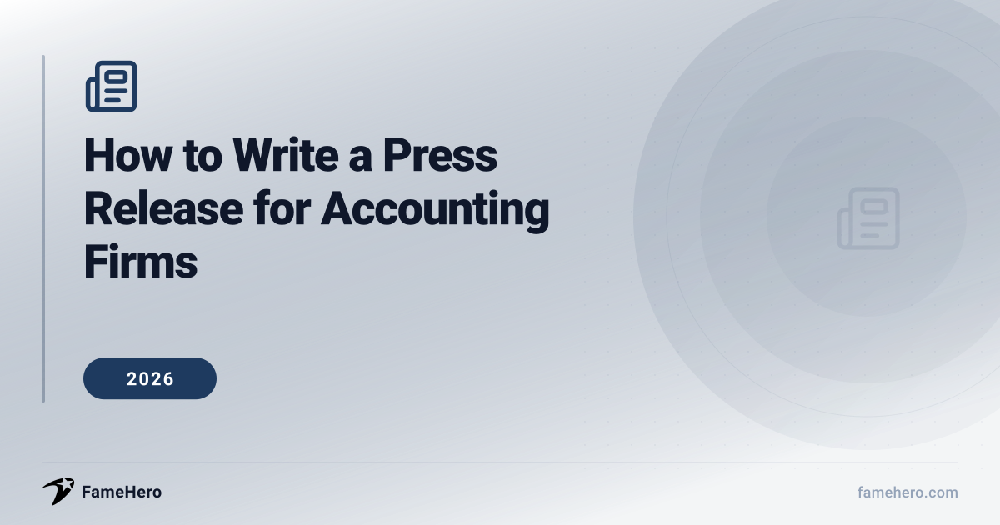

How to Write a Press Release for Accounting Firms in 2026 (Boost Visibility)

Why Accounting Firms Need Expert Press Release Skills in 2026
For accounting firms in 2026, mastering press releases is crucial for establishing credibility and visibility amidst increasing regulatory complexity and evolving client demands. Firms face challenges like adapting to new tax laws, attracting and retaining talent, and integrating advanced technology. A well-crafted press release can highlight expertise, announce innovative services, and position the firm as a thought leader, helping to build trust with potential clients and industry peers.
This guide will provide a step-by-step walkthrough for accounting firms on writing effective press releases. You'll discover pro tips for crafting compelling narratives and discover a focused roundup of five essential software tools designed to streamline your press release distribution and management process.
Want results faster? Get published from $49
FameHero guarantees media placements on real news sites. See what's possible with a free scan.
How to Write a Press Release for Accounting Firms (2026)
How to Write a Press Release for Accounting Firms (2026)
- Craft a Compelling, Keyword-Rich Headline. Your headline is the first and most crucial element of your press release, designed to immediately capture the attention of journalists and potential clients. For accounting firms in 2026, this means incorporating relevant keywords that reflect current industry trends or client pain points, such as "AI in Tax Compliance" or "Navigating New Regulatory Changes." A strong headline should be concise, informative, and clearly state the news, avoiding jargon. For example, instead of "Firm Announces New Service," try "Accounting Firm Launches AI-Powered Tax Advisory to Streamline Compliance for SMBs."
- Write a Strong Lead Paragraph (The 5 Ws). The introductory paragraph must succinctly answer the core questions: Who, What, When, Where, and Why. This ensures that even a quick scan provides the essential information. For an accounting firm, this could be announcing a new partnership, a significant client success story, or the release of a new advisory service. For instance: "Smith & Jones Accounting (Who) today announced (When) the launch of its new ESG advisory service (What) in New York City (Where), designed to help mid-sized businesses navigate complex sustainability reporting requirements (Why)."
- Develop the Body with Data and Authority. Expand on the lead paragraph with supporting details, facts, and statistics that lend credibility to your announcement. Accounting firms should leverage their expertise by including data points related to regulatory changes, market trends, or client outcomes. For example, if announcing a new service, cite the percentage of businesses struggling with a particular compliance issue or the potential cost savings clients can achieve. This demonstrates authority and provides journalists with concrete information.
- Include Authoritative Quotes. Integrate one or two quotes from key stakeholders, such as the managing partner or a lead specialist. These quotes should offer insight, explain the significance of the news, and add a human element, rather than just stating facts. For an accounting firm, a quote might emphasize the firm's commitment to client success or its vision for the future of financial advisory. For example, a quote could read: "We're seeing unprecedented complexity in tax law, and our new AI-driven platform is designed to provide clarity and strategic advantage for our clients, ensuring they remain compliant and competitive," says Jane Doe, Managing Partner.
- Provide a Concise Boilerplate and Contact Information. The boilerplate is a brief "About Us" section that provides essential context about your accounting firm, including its mission, services, and key achievements. Following this, clearly list contact information for media inquiries, including a name, email, and phone number. This ensures that interested journalists can easily follow up for more details or interviews.
- Optimize for Digital and Social Channels. In 2026, press releases must be adaptable for digital media and social networks. This includes using relevant hashtags, ensuring the content is visually appealing and easy to share, and potentially including short versions or links to multimedia elements like infographics or videos. For accounting firms, this means making complex financial information accessible and shareable across platforms where clients and prospects are active.
Pro Tips for Accounting Firm Press Releases
- Highlight Niche Expertise: Instead of general accounting services, focus on a specific area like tax law changes for small businesses or new audit regulations.
- Quantify Success: Use numbers to demonstrate your firm's impact. For example, "Helped clients save an average of 15% on tax liabilities last year."
- Avoid Jargon: Translate complex accounting terms into plain language that a general audience can understand.
- Mistake: Overly Promotional Tone: Resist the urge to sound like a sales pitch. Focus on providing valuable information, not just selling your services.
- Mistake: Neglecting Local Angle: If relevant, tie your news to local economic trends or community events to increase local media interest.
- Include a Clear Call to Action: Guide readers on what to do next, whether it's visiting your website for a free consultation or downloading a relevant whitepaper.
Platforms
FameHero
famehero.comBudgetAccounting firmsStarting at $49 per placementAccounting Firms teams can use FameHero to outsource the “ink” layer—paid editorial placements where trade or business press influence the buying cycle—while keeping nuanced Accounting Firms messaging in-house. This visibility platform helps accounting firms establish credibility and authority by publishing professionally written articles on trusted online publications, targeting search, media, and AI discovery.
StrengthsGuaranteed media placements, builds long-term credibility and authority, leverages AI for visibility analysisBest forFirms seeking to enhance online visibility, SEO, and brand credibility through authoritative content placements.Not ideal forFirms looking for immediate, high-volume press release distribution without a focus on content quality or long-term brand building.PRWeb
prweb.comMid-marketAccounting firmsContact for pricingPRWeb is a press release distribution service that helps accounting firms increase online visibility and drive website traffic by publishing announcements to a wide network of news outlets, journalists, and online platforms. It is noted for being search engine friendly, providing valuable backlinks.
StrengthsStrong SEO benefits, wide distribution network, long-standing reputationBest forAccounting firms aiming to improve search engine rankings and gain broad online exposure for their news.Not ideal forFirms that require highly personalized media outreach or services beyond standard press release distribution.Newswire.com
newswire.comMid-marketAccounting firmsContact for pricingNewswire.com offers a press release distribution platform to help accounting firms increase online visibility and web presence. Services include distribution, access to a media database, media monitoring, and analytics to track announcement impact.
StrengthsComprehensive suite of services including media monitoring and analytics, caters to various budgetsBest forAccounting firms looking for a robust platform with distribution, monitoring, and analytics capabilities.Not ideal forFirms that need highly specialized or niche media targeting beyond standard packages.Prowly
prowly.comPremiumAccounting firmsStarting at $258/month (billed annually)Prowly is an all-in-one PR software solution that simplifies press release creation, distribution, and media outreach for accounting firms. It provides tools for managing a media database, crafting press releases, and hosting online newsrooms to manage media relations efficiently.
StrengthsIntegrated platform for creation, distribution, and outreach; includes media database and newsroom features; AI-powered pitch personalizationBest forAccounting firms and PR professionals seeking an integrated solution for managing their press release workflow.Not ideal forVery large enterprises with complex, global PR needs that might require more extensive customization.IMCWire
imcwire.comMid-marketAccounting firmsContact for pricingIMCWire is a press release distribution platform that assists accounting firms in publishing their stories on numerous top-tier news outlets, including major financial news sites. They guarantee publication within 72 hours and offer tailored press release writing services.
StrengthsGuaranteed publication within 72 hours, broad exposure on major platforms, offers tailored writing servicesBest forAccounting firms that need guaranteed and rapid publication of their press releases across reputable news outlets.Not ideal forFirms that require extensive post-publication media monitoring or detailed analytics beyond basic coverage reports.
Common Press Release Mistakes for Accounting Firms
- Leading with branding or context instead of news: Journalists need to know "what happened and why it matters" immediately. Burying the lead or focusing on self-promotional language will likely result in the release being ignored.
- Lack of genuine news value: A press release that reads like an advertisement or marketing copy will not attract media attention. It must offer information that is timely, relevant, and contributes to a broader conversation.
- Poor formatting and structure: Long paragraphs, dense text, and a lack of clear organization make it difficult for editors to scan and understand the core message, leading to disinterest.
- Insufficient proof or data: Strong claims require concrete evidence. Announcing new services or achievements without supporting data points diminishes credibility.
- Generic or uninspired quotes: Quotes that could be used by any company in any industry lack impact. Effective quotes should be specific and add value to the story.
- Ignoring SEO and generative AI optimization: Clear headlines, keywords, and explicitly stated facts are necessary for discoverability and interpretation by search engines and AI systems.
Frequently Asked Questions for Accounting Firms Press Releases
Related Comparisons
PR Agencies Alternatives for Accounting Firms in 2026 (Cost-Saving Options)
Accounting Firms
How to Write a Press Release for Web3 Companies in 2026 (Navigate Crypto's Evolving Landscape)
Web3 Companies
How to Write a Press Release for Fintech Startups in 2026 (Attract Investors & Credibility)
Fintech Startups